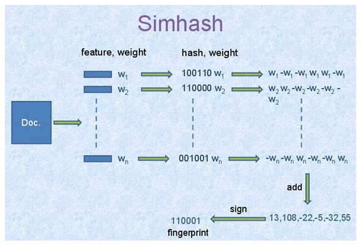

最出名的推荐系统估计要非“协同过滤”莫属，经典的示例就是网站上的各种推荐，根据客户对美食或书籍或电影的评分，来推荐给爱好相似的客户类似商品。
但是，如果你没有任何客户对商品的评分，怎么办呢？评分也是需要积累的呀。有人会说打标签，好听点就是用户画像。打标签也不错，不过是个纯粹的体力活、苦活、累活。我们又不想太累，用上点简单的文本挖掘吧。当然，也许这些方法都是为了打标签，哈哈
1. 最简单的推荐系统（搜索——匹配某字段中的关键词）
直接在字段“关键字段”中使用正则表达式搜索关键字，返回大量包含该关键字的数据。
R代码：
# 读入数据
data <- read.csv("your_file.csv", stringsAsFactors = F)
# 找出合适的变量
data2 <- data[, c(13, 14, 16, 22, 26,
29, 30, 41, 42, 43, 45, 47)]
# 正则表达式找出匹配的行号
id <- grepl("某关键词", data2$key)
# 返回所有匹配的数据
out <- data2[id, ]
# 返回前15行及个别列
out[1:15, c(5, 6, 12)]python代码：
# 导入pandas
import pandas as pd
# 读入数据
data = pd.read_csv("your_file.csv", encoding = "utf-8")
# 匹配关键词，返回true或false
rain_type = data.key.str.contains(u'某关键词')
# 返回所有包含关键词的数据
rain_d = data[rain_type == 1]2. 优先级筛选的推荐方法：
首先，把字段“关键字段”中信息整理成一个字段“类型”，查找与目标数据的“类型”相同的数据。
然后，在同类型的数据中继续筛选出发生在同一个地点，甚至同一个人员。
R代码：
data_s <- read.csv("your_file.csv", stringsAsFactors = F)
temp1 <- data_s[grepl("关键词1", data_s$key), ]
temp1$type <- "关键词1"
temp2 <- data_s[grepl(“关键词2", data_s$key), ]
temp2$type <- "关键词2"
data_new <- rbind(temp1, temp2)
obj_id <- 2
obj <- data_new[obj_id, ]
train <- data_new[-obj_id, ]
# 找出同种类别的
train2 <- train[train$type == obj$type, ]
# 找出同类别发生在同一个站点的
if (sum(train2$PLACE_NAME == obj$PLACE_NAME) == 0) {
train3 <- train2
} else {
train3 <- train2[train2$PLACE_NAME == obj$PLACE_NAME, ]
}
# 找出同类别发生在同一个站点的同一个人的
if (sum(train3$FINDER == obj$FINDER) == 0) {
train4 <- train3
} else {
train4 <- train3[train3$FINDER == obj$FINDER, ]
}
train4[11:14, ]
obj[, c(1:5)]python代码：
import pandas as pd
data = pd.read_csv("your_file.csv", encoding = "utf-8")
# 找出包含某种关键词的数据
temp1 = data[data.key.str.contains(u'关键词1') == 1]
temp1['type'] = "关键词1"
temp2 = data[data.key.str.contains(u'关键词2') == 1]
temp2['type'] = "关键词2"
# 合并两种关键词的数据
data_new = pd.concat([temp1, temp2])
# 给出目标观察值的位置，第几个数值
obj_id = 4
# 返回目标观察值
obj = data_new.iloc[obj_id, ]
# 从数据集中排除目标观察值的标签，不是位置，留下待推荐的数据
# obj.name返回目标观察值的index，即标签，是46
# obj_id是目标观察值的位置，是4
train = data_new.drop(obj.name)
# 找出同类别
train2 = train[train.type == obj.type]
# 对同类别数据，继续筛选，找发生在同一个地点的数据
# 这里不知道是什么原因，选列变量要根据位置，根据名字则失败
if (sum(train2.iloc[:, 0] == obj[0]) == 0):
train3 = train2
else:
train3 = train2[train2.iloc[:, 0] == obj[0]]
# 继续根据优先级筛选，在上面的基础上，筛选是否有同一个人的数据
if (sum(train3.iloc[:, 1] == obj[1]) == 0):
train4 = train3
else:
train4 = train3[train3.iloc[:, 1] == obj[1]]
obj
train4.head()3. 基于Simhash和海明距离算法的推荐：
首先，把字段“关键字段”的文字进行分词，提取关键字，计算simhash值。
然后，根据每行数据的simhash值，计算目标数据与其他所有数据之间的海明距离，推荐距离目标数据最近的前2个数据。
R代码：
library(jiebaR)
data_s <- read.csv("your_file.csv", stringsAsFactors = F)
sim <- function(data, obj) {
# 初始化分词引擎
simhasher = worker("simhash")
# 计算需要匹配的语句与其他所有语句之间的距离
out <- lapply(data$key, FUN = function(x) {
as.numeric(distance(data$key[obj], x, simhasher)$distance)
})
# 距离以行号为名字
names(out) <- 1 : length(data$key)
# 删除需要匹配的语句与自身的距离
out <- out[-obj]
# 找到与需要匹配的语句距离从小到大的行号
id <- as.numeric(names(sort(unlist(out))))
# 返回与需要匹配的语句距离从小到大的推荐
list("obj" = data[obj, c(1, 2, 3, 4, 5)],
"degree" = paste(100 - unname(sort(unlist(out))[1:2]), "%", sep = ""),
"similar" = data[id[1:2], c(1:9)])
}
sim(data = data_s, obj = 1)python代码：
import pandas as pd
import jieba
import jieba.analyse
# jiebaR中直接有计算simhash值和海明距离的函数
# jieba中貌似没有
# 同一个项目不同语言的接口，功能上居然有差异，有点吃惊
# 幸好找到有人实现了simhash在python中
http://blog.sina.com.cn/s/blog_62b8329101017vv3.html
### simhash算法的python实现
class simhash:
# 构造函数
def __init__(self, tokens = '', hashbits = 128):
self.hashbits = hashbits
self.hash = self.simhash(tokens);
# toString函数
def __str__(self):
return str(self.hash)
# 生成simhash值
def simhash(self, tokens):
v = [0] * self.hashbits
for t in [self._string_hash(x) for x in tokens]:
# t为token的普通hash值
for i in range(self.hashbits):
bitmask = 1 << i
if t & bitmask :
v[i] += 1 # 查看当前bit位是否为1， 是的话将该位+1
else:
v[i] -= 1 # 否则的话，该位-1
fingerprint = 0
for i in range(self.hashbits):
if v[i] >= 0:
fingerprint += 1 << i
return fingerprint # 整个文档的fingerprint为最终各个位 >=0的和
# 求海明距离
def hamming_distance(self, other):
x = (self.hash ^ other.hash) & ((1 << self.hashbits) - 1)
tot = 0;
while x:
tot += 1
x &= x - 1
return tot
# 求相似度
def similarity (self, other):
a = float(self.hash)
b = float(other.hash)
if a > b : return b / a
else: return a / b
# 针对source生成hash值 （一个可变长度版本的python的内置散列）
def _string_hash(self, source):
if source == "":
return 0
else:
x = ord(source[0]) << 7
m = 1000003
mask = 2 ** self.hashbits - 1
for c in source:
x = ((x * m) ^ ord(c)) & mask
x ^= len(source)
if x == -1:
x = -2
return x
########################################################
# 通过计算目标数据和其他数据的simhash值，得到相似度
def sim (data, obj):
obj_data = data.iloc[obj, ]
# 计算目标数据的simhash值
word_obj = jieba.analyse.extract_tags(data.DEFECT_PHENOMENON.iloc[obj])
hash_obj = simhash(word_obj)
# 计算其他数据的simhash值并计算相似度
sim_value = []
for i in range(data.DEFECT_PHENOMENON.size):
word_other = jieba.analyse.extract_tags(data.DEFECT_PHENOMENON.iloc[i])
hash_other = simhash(word_other)
sim_value.append(hash_obj.similarity(hash_other))
# 把列表转换为pandas中的序列，因为有index记录每一个相似度对应的data中的行号，即位置
# 删除目标变量与自身的相似度数值
sim_series = pd.Series(sim_value).drop(obj_data.name)
return sim_series
###############################
# 读入数据
data = pd.read_csv("your_file.csv", encoding = "utf-8")
# 数据清洗
# 关键字段的数据类型，应该都为unicode，因为部分数据缺失为nan，类型为float，提取文本关键词报错
# 提取出关键字段非空的数据
data_new = data[data.key.isnull() == 0]
# 得到目标数据与所有其他数据之间的相似度
out = sim(data = data_new, obj = 9)
# 按照从大到小的顺序把相似度排序
sorted_out = out.sort(ascending = False, inplace= False)
# 目标关键词
print data_new.key.iloc[9]
# 推荐的最相似的前五个关键词
data_new.key.iloc[sorted_out.index[0:5]]经人工测试了几个数据，python版的效果没有R版的好，不知道是因为python版的simhash算法和jiebaR内置的simhash算法的区别，还是python版的提取关键词和jiebaR的提取关键词有区别。 后来经检查，还是python版的simhash算法的jiebaR中内置的算法不同，前者只考虑了关键词，后者还考虑了关键词的权重，显然，后者的权重不是白加的，效果不是一般的好。 改进了python版的simhash算法，添加了权重部分，效果好多了，但还是没有jiebaR的效果好，应该是关键词对应的权重的差别，jieba和jiebaR输出的关键词的权重不同，对同样的数据。
更好点，其实可以先用simhash和海明距离找到类似的文本，然后使用优先级过滤再对类似的文本进行排序，更精细的确定相似性。
ps: python代码：
### 添加了权重的simhash算法#######################
### simhash算法的python实现
class simhash:
# 构造函数
def __init__(self, tokens = '', hashbits = 128):
self.hashbits = hashbits
self.hash = self.simhash(tokens);
# toString函数
def __str__(self):
return str(self.hash)
# 生成simhash值
def simhash(self, tokens):
v = [0] * self.hashbits
# tokens 代表关键词和对应的权重
# only_token 代表关键词
only_token = [x[0] for x in tokens]
# 得到关键词对应的hash值
only_hash = [self._string_hash(x) for x in only_token]
# only_weight 代表关键词对应的权重
only_weight = [x[1] for x in tokens]
# 把hash值和对应的权重组合在一起
hash_weight = zip(only_hash, only_weight)
for t in hash_weight:
# t为token的普通hash值权重对
for i in range(self.hashbits):
bitmask = 1 << i
if t[0] & bitmask :
v[i] += t[1] # 查看当前bit位是否为1， 是的话将该位+weight
else:
v[i] -= t[1] # 否则的话，该位-weight
fingerprint = 0
for i in range(self.hashbits):
if v[i] >= 0:
fingerprint += 1 << i
return fingerprint # 整个文档的fingerprint为最终各个位 >=0的和
# 求海明距离
def hamming_distance(self, other):
x = (self.hash ^ other.hash) & ((1 << self.hashbits) - 1)
tot = 0;
while x:
tot += 1
x &= x - 1
return tot
# 求相似度
def similarity (self, other):
a = float(self.hash)
b = float(other.hash)
if a > b : return b / a
else: return a / b
# 针对source生成hash值 （一个可变长度版本的python的内置散列）
def _string_hash(self, source):
if source == "":
return 0
else:
x = ord(source[0]) << 7
m = 1000003
mask = 2 ** self.hashbits - 1
for c in source:
x = ((x * m) ^ ord(c)) & mask
x ^= len(source)
if x == -1:
x = -2
return x
# 更新后的函数，限制关键词数量为5个，因为这里的测试文本就是几个句子，过多的关键词反而掩盖了重点
# 因为前面的数据结构发生了变化，下面的函数也有少许变动。
# 通过计算目标数据和其他数据的simhash值，得到相似度
def sim (data, obj):
obj_data = data.iloc[obj, ]
# 计算目标数据的simhash值
word_obj = jieba.analyse.extract_tags(data.key.iloc[obj], topK = 5, withWeight= True)
hash_obj = simhash(word_obj)
# 计算其他数据的simhash值并计算相似度
sim_value = []
for i in range(data.key.size):
word_other = jieba.analyse.extract_tags(data.key.iloc[i], topK = 5, withWeight= True)
hash_other = simhash(word_other)
sim_value.append(hash_obj.similarity(hash_other))
# 把列表转换为pandas中的序列，因为有index记录每一个相似度对应的data中的行号，即位置
# 删除目标变量与自身的相似度数值
sim_series = pd.Series(sim_value).drop(obj_data.name)
return sim_series
# 得到目标数据与所有其他数据之间的相似度
out = sim(data = data_new, obj = 9)
# 按照从大到小的顺序把相似度排序
sorted_out = out.sort(ascending = False, inplace= False)
# 目标关键词
print data_new.DEFECT_PHENOMENON.iloc[9]
# 推荐的最相似的前五个关键词
data_new.DEFECT_PHENOMENON.iloc[sorted_out.index[0:5]]最后附上一个图，这个图清楚明了的解释了simhash算法的原理，这张图的原始出处不知道来自哪里，但几乎所有讲解simhash的文章都使用了这个图。

参考网址：
备注：转移自新浪博客，截至2021年11月，原阅读数144，评论0个。